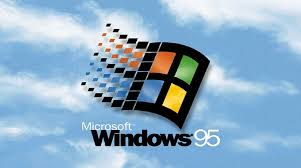
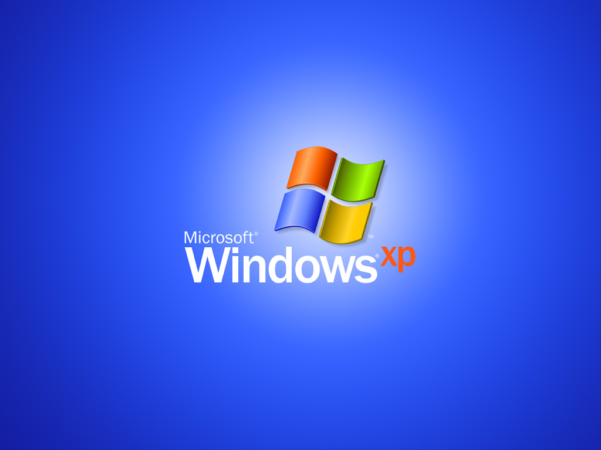
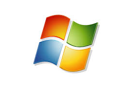
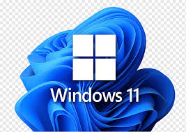

Revolução do Windows
O que é a Revolução do Windows?
A Revolução do Windows teve como o objetivo de transformar e impactar os sistemas operacionais da Microsoft onde tiveram computação pessoal e uso de tecnologia em escala global.
Inicio do Windows
A Microsft lançou a primeira versão do Windows em 1985 com uma interface gráfica sobre MS-DOS. Isto foi uma Resposta as interface gráficas como a da Apple.
Windows 95 e 98
Pós o inicio da Revolução dos anos 90 com o Windows 3.X, Windows 95 lança no ano de 1995 que normalmente é dito como um marco histórico pela a introdução do menu inicial, barra de tarefas e sistema de arquivos FAT32. O seu sucesso de vendas expandiu drasticamente a base de usuários de PCs. Anos depois é lançado o windows 98 em que focava integrar o computador á internet e consigo criado o primeiro navegador.
Windows XP e Vista
O Windows XP é um dos Sistemas operativos mais iconicos de sempre pela a sua usabilidade doméstica e empresarial e consigo foi um dos mais duradouros. O Windows Vista trouxe uma interface gráfica avançada mas sofreu problemas de desempenho.
Windows XP e Vista
O windows 7 foi lançado com resposta as criticas ao Windows Vista, trouxe melhorias significativas em desempenho estabilidade e interface introduzindo recursos como Snap, uma barra de tarefas redesenhada e suporte aprimorado a telas sensiveis aos toques. O Windows 8 foi uma tentativa ousada de adaptar o sistema operacional á era dos dispositvos touchescreen mas foi um falhanço, levando á introdução dos Windows 8.1 que trouxe melhorias e restaurou o botão inicar.
Windows XP e Vista
Com o Windows 10 consolidou as melhores ideias das versões anteriores com atualizaçóes continuas e integração do one drive. O Windows 11 introduziu um design mais moderno com um suporte avançado para a produtividade hibrida e integração com apps Android.